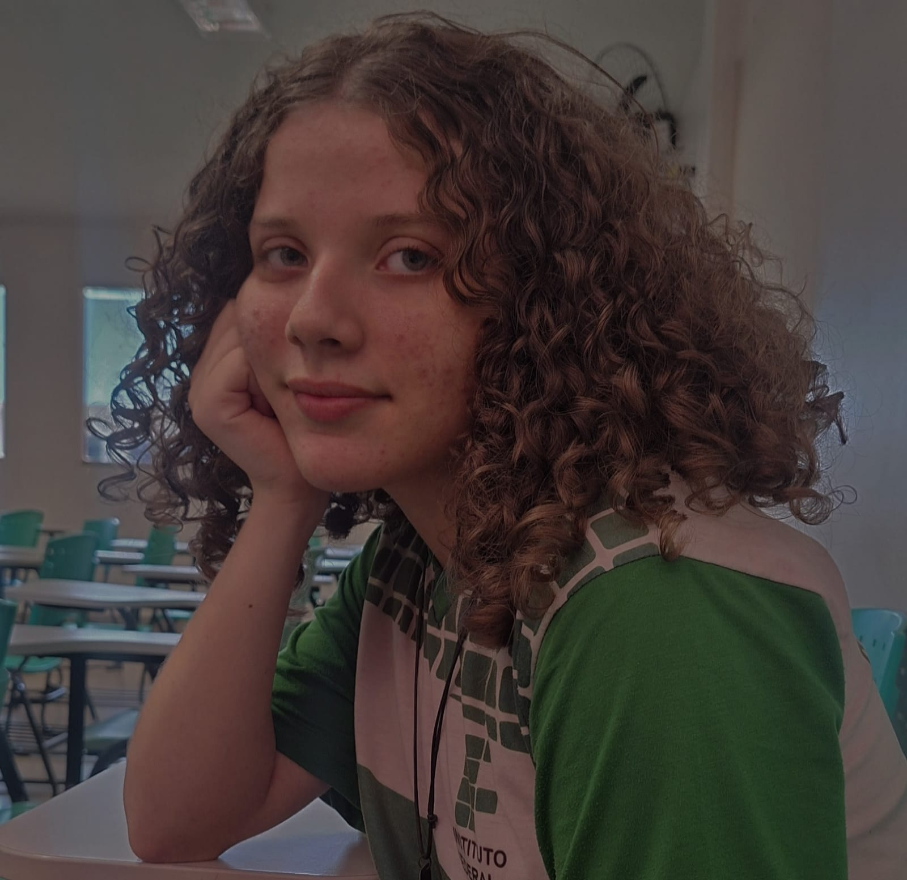

Sobre mim
Iasmim Figarela Maciel

Olá eu me chamo Iasmim, e sou apaixonada por tecnologia e por tudo o que envolve o universo da informática. Atualmente, trabalho no departamento de Recursos Humanos de uma empresa, onde uso minhas habilidades para apoiar a gestão de talentos e contribuir para um ambiente de trabalho produtivo e harmonioso.
Fora do ambiente profissional, sou um grande entusiasta de filmes e séries, sempre em busca de novas histórias e experiências cinematográficas para enriquecer meu tempo livre. Também tenho uma paixão especial pelo xadrez, um jogo que me desafia a pensar estrategicamente e a aprimorar minhas habilidades de resolução de problemas
.